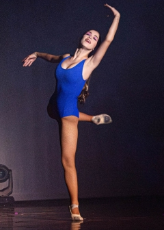
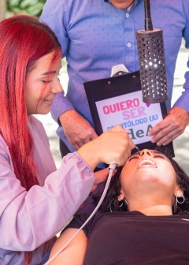

Consulta nuestros eventos y agéndate
→

Educación a lo largo de la vida
→Pódcast
Ciencia, arte y comunicación: explorando el 10/12lab innovavoz. temporada 3
23 sep. 2025
Opinión

Venezuela y América Latina frente al imperialismo global
27 sep. 2025